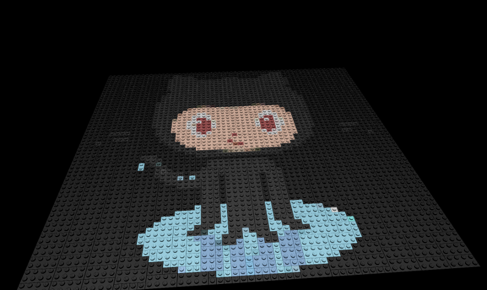
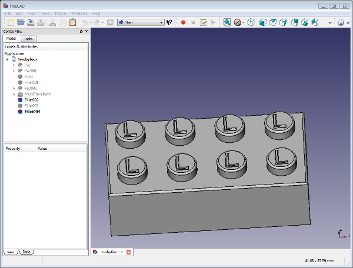

This is a javascript program using the threejs library to convert an image into what the image would look like if it was created with legos bricks.

Three.js Is an interface to webgl (among other things) with javascript. This library handled loading the 3d models, moving them around, and displaying them.

FreeCad while having a small learning curve, can make some operations very easy and consistent when building models. This isn't something you'd want to use for character modeling, but if you are doing part modeling, then this is a very good tool.
Once I had the models created in freecad, I exported it as an STL, brought it into blender, and then used a blender plugin to convert it to a javascript format that three.js could understand.
dat.gui Is a package from google that allows you to add a simple UI to your webpage. This is used to set parameters on the page before and after the model is created.
the guiUpdate variable holds all the default values that i'm collecting. This is also the variable I look at to collect values from the different parts of the UI. I've broken the interface into two folders; one folder is for actions that happen pre-render, and the other folder is post render.
var guiUpdates = function() { this.colorType = 'lego'; this.imageWidth = 60; this.imageHeight = 60; this.shine = 4; // how shiney is the brick this.lightLevel = 1; // how much light this.posterizeLevel = 4; this.showGrid = false; this.showXYZ = false; this.enableFog = true; this.autoRotate = false; } gui = new dat.GUI(); var guiData = new guiUpdates(); var preFolder = gui.addFolder('preload'); var postFolder = gui.addFolder('postload'); preFolder.add(guiData, 'colorType', ['posterize','lego'] ); preFolder.add(guiData, 'imageWidth', 10,1000).step(1); preFolder.add(guiData, 'imageHeight', 10,1000).step(1); preFolder.add(guiData, 'posterizeLevel', 1, 30).step(1); preFolder.add(guiData, 'shine', 0, 50).step(1); preFolder.add(guiData, 'enableFog'); postFolder.add(guiData, 'lightLevel', 0, 4).step(.01); postFolder.add(guiData, 'showGrid'); postFolder.add(guiData, 'showXYZ'); postFolder.add(guiData, 'autoRotate'); preFolder.open();